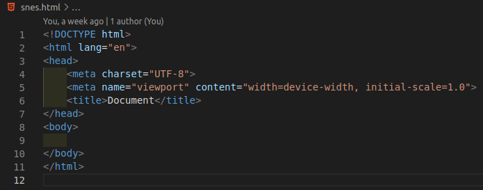
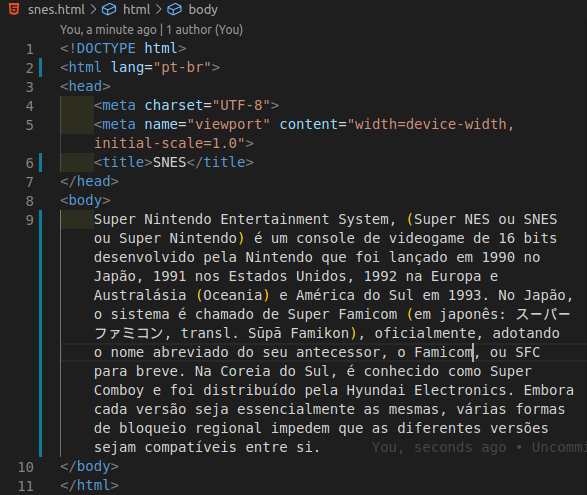
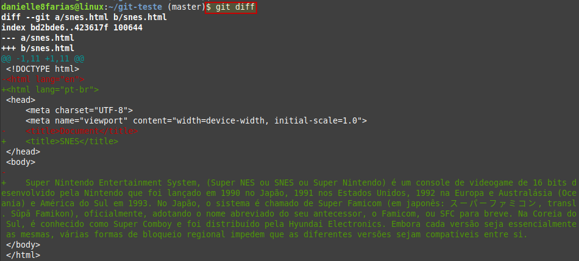
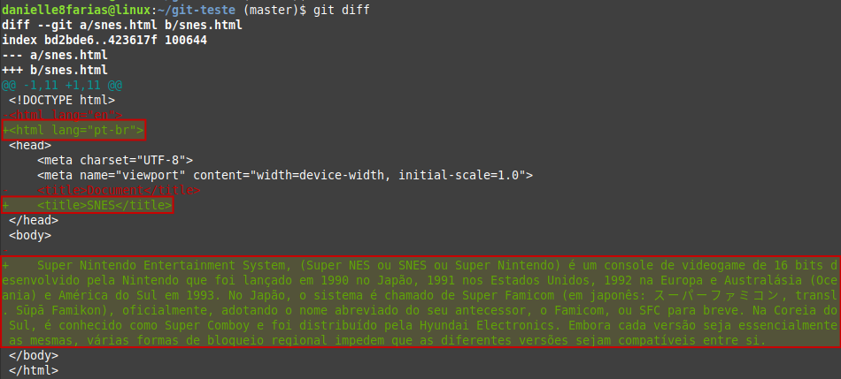
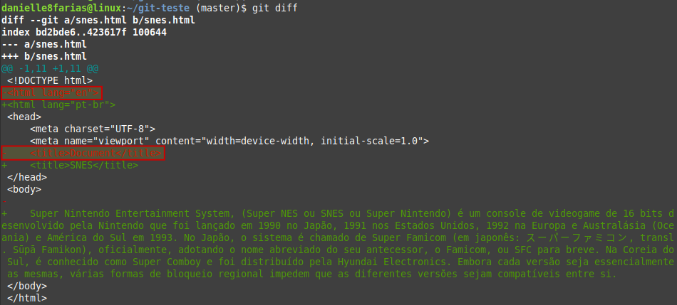
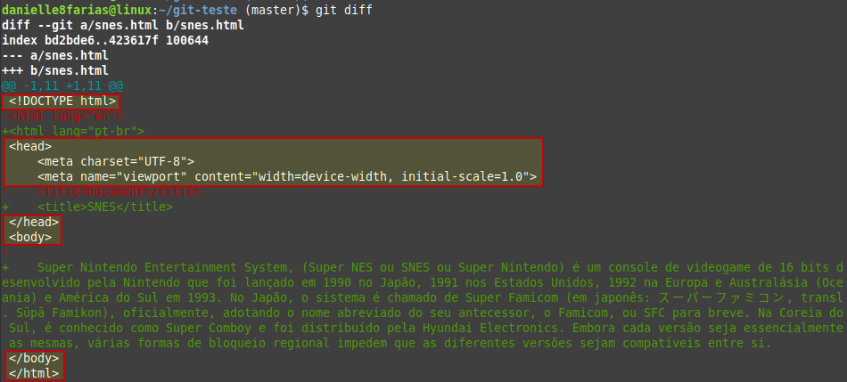

Para saber o que foi modificado em um arquivo rastreado do repositório, mas que ainda não foi adicionado um commit sobre, usamos o comando:
$ git diff
- $ indica que você deve usar o usuário comum para fazer essa operação.
Exemplo:
Temos o arquivo inicial abaixo
Em seguida, fizemos as seguintes modificações
Ao digitar o comando diff, temos:
Assim podemos ver (escrito em verde) quais partes do arquivo foram adicionadas.
Em vermelho, as partes que foram retiradas ou modificadas.
E o que está escrito com a cor branca aquilo que foi mantido (não houve modificação).
